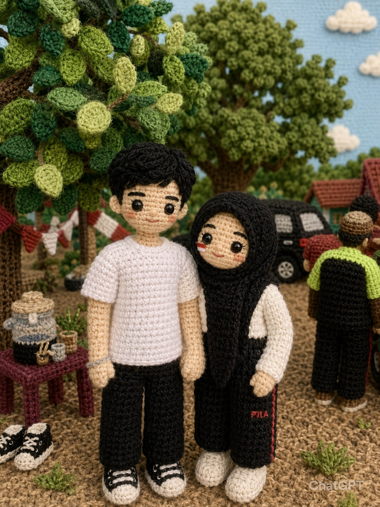

"Di bawah langit malam yang tenang ini, ada sebuah pesan yang telah lama menunggu untuk dibaca."
HELLO, DAMAR MAQRIBI
"Aku tidak tahu apakah kamu akan membuka halaman ini sampai akhir, tapi terima kasih sudah meluangkan waktu."
Ada Surat Untukmu
Tarik suratnya...
Klik amplop untuk membukanya.
Hai Damar Aku Persembahkan Surat Ini Untukmu,
Aku membuat pesan ini karena ada beberapa hal yang selama ini ingin aku sampaikan.
Pertama, aku ingin minta maaf. Aku tahu keputusan yang aku ambil dulu mungkin menyakitkan dan membuatmu kecewa. Aku juga sadar bahwa semuanya terjadi begitu saja tanpa bisa dijelaskan dengan baik.
Aku hanya ingin kamu tahu bahwa saat aku memilih mengakhiri hubungan kita, itu bukan karena aku sudah tidak sayang lagi. Bukan karena aku tidak peduli. Dan bukan karena aku tidak ingin bersamamu.
Sebenarnya, saat itu aku sedang berada dalam keadaan yang membuatku merasa tidak mampu mempertahankan hubungan kita. Sampai sekarang pun, kalau dipikir-pikir lagi, aku masih berharap keadaan waktu itu bisa berbeda.
Aku masih mengingat banyak hal tentang kita. Aku masih mengingat bagaimana kita bisa saling peduli, saling menjaga, dan saling membuat satu sama lain merasa berarti. Semua itu tidak pernah aku anggap sebagai kenangan yang sia-sia.
Aku juga mau jujur sampai sekarang aku masih peduli sama kamu. Kadang aku masih penasaran bagaimana kabarmu, bagaimana hari-harimu berjalan, dan apakah kamu baik-baik saja.
Aku tidak membuat pesan ini untuk memintamu kembali atau memaksamu menunggu. Aku hanya ingin menyampaikan apa yang selama ini ada di pikiranku.
Kalau boleh berharap, aku hanya ingin hubungan kita tidak menjadi canggung atau terasa asing. Aku ingin kita bisa berkomunikasi dengan baik seperti dulu, tanpa ada rasa tidak nyaman di antara kita.
Dan yang paling penting, aku berharap kamu selalu menjaga kesehatanmu, menjaga dirimu baik-baik, dan menjalani hidup dengan bahagia. Karena sejujurnya, aku masih sangat peduli tentang hal itu.
Terima kasih untuk semua hal baik yang pernah kita lalui bersama. Apa pun yang terjadi ke depannya, aku tetap bersyukur karena pernah mengenalmu.
Jaga diri baik-baik ya, Damar.
— Hesti ❤️
"Terima kasih sudah meluangkan waktu membaca semuanya sampai akhir."
Dari semua yang pernah kita lalui, hal apa yang paling kamu ingat?
Sebelum kamu pergi, bolehkah aku tahu satu hal?
"Menurutmu, apakah kita masih bisa menjadi teman yang baik seperti dulu?"

Jika Aku Bisa Meminta Satu Hal
Jaga hubunganmu dengan Allah sebaik-baiknya.
Sayangi Keluargamu.
Pedulilah dengan orang sekitar.
Jangan pernah melakukan hal yang akan membuatmu rugi kedepannya.
Jangan merusak pikiran dan tubuhmu.
"Apa yang kamu lakukan mungkin biasa bagimu, tetapi tidak bagiku."
Tinggalkan satu pesan untuk Hesti
Pesanmu telah tersimpan.
Catatan Untuk Hesti
Hal yang paling diingat:
...
Apakah masih bisa menjadi teman?
...
Pesan untuk Masa Depan:
...
— Dari Damar Maqribi
Untuk Damar Maqribi
Terima kasih telah menjadi bagian dari cerita yang tidak pernah benar-benar hilang dari ingatanku.
❤️